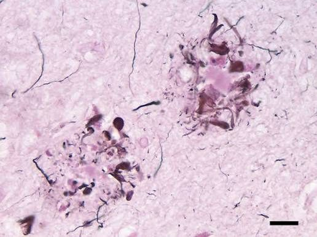
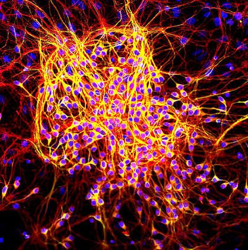

Alzheimer Disease
- Part 2
It is our brain that makes us who we are: how we react in different situations, who we love, what we fear, what we miss. These fundamental aspects of human nature are vulnerable when our brains malfunction in a neurodegenerative disorder known as Alzheimer's Disease. Alzheimer's disease is a form of dementia - a global disease that affects about 5% of people 65 years old and 25% of people 85 years of age and older. This is a heartbreaking illness: it often begins with memory loss, progresses to loss of personality, and eventually death. Watching loved ones lose themselves in this way is a particularly difficult experience for a loved one. Eventually, people who are sick may not be able to recognize those closest to them and will require help with daily activities such as dressing, eating, bathing, and going to the bathroom.
Impaired communication between neurons including: ACh and NMDA receptors
ACh
Nerve cells communicate with each other using neurotransmitters, and one of the most common neurotransmitters in the nervous system is acetylcholine (ACh). But in a person with Alzheimer's, the amount of acetylcholine (ACh) is reduced so much that the signals are not transmitted in the nervous system effectively. Not only that, but our bodies also have the enzyme acetylcholinesterase (which breaks down or hydrolyzes acetylcholine (ACh), into acetic acid and choline). For a normal person with normal levels of acetylcholine (ACh), this enzyme is not a problem, but for a person with Alzheimer's, the already reduced amount of acetylcholine (ACh) is being reduced even more, leading to the neural signal transmission being significantly decreased, leading to a decline in attention, memory, learning ability, higher awareness, and daily activities such as dressing, eating, bathing and going to the toilet.
NMDA receptors
NMDA receptors are another type of glutamate receptor found in the postsynaptic membrane. Normally, NMDA receptors bind to the neurotransmitter glutamate, opening a channel that allows calcium ions to enter neurons. In Alzheimer's disease, damaged cells become overloaded with calcium ions (overstimulated), further damaging neurons – a condition known as neuronal excitotoxicity, and this condition can lead to cell death.
Beta-amyloid plaques
There are Amyloid Precursor Proteins (APP) on our nerve cell membranes and their function is to help with the growth, maintenance and repair of nerve cells. After serving its purpose, the Amyloid Precursor Protein (APP) will be decomposed and reused, and the cycle continues. Amyloid Precursor Proteins (APPs) are normally broken down by the enzymes α-secretase and γ-secretase, which run across the cell membrane and cut Amyloid Precursor Protein (APP) into small pieces, similar to how a lawn mower cut grass. These fragments dissolve into the extracellular medium for reuse. But for people with Alzheimer's, there's a third friend called β-secretase, which cuts APP molecules in such a way that the cut pieces can no longer dissolve. These clumps of molecules bind together just outside the cell to form Beta Amyloid Plaques, and these plaques interrupt the signal, similar to shoving a rock into the middle of a stream of running water. As many amyloid plaques are formed, they cause many signal obstructions in the nervous system leading to severely impaired brain function. The scientists also think that these amyloid plaques also trigger an immune response to microglia, non-neuronal brain cells that act as immune cells for the central nervous system, causing inflammation.


Tau protein
Tau protein is a micronutrient-binding protein found in most tissues and highly present in the central and peripheral nervous systems. It is an important component of the neuronal skeleton for stabilizing microtubules. Microtubules are essential for maintaining neuronal structure, axonal transport, and synaptic plasticity. Most importantly, they are involved in the transport of substances within cells; similar to a railroad system, the microtubules act as rail, and the Tau proteins act as junctions and welds that keep the rails from deforming. Through isoforms of the Tau protein, its phosphorylation interacts with tubulin to stabilize microtubule assembly. The scientists hypothesized that the presence of Beta Amyloid clusters outside the cell also stimulates the enzyme Kinase to work inside the cell. This enzyme binds phosphate radicals to Tau protein molecules, resulting in the protein being deformed and losing its function. Tau proteins are over-phosphorylated due to distortion and are no longer stable bound to tubulins. They will separate from polymerized microtubules into oligomers (about 2 or 3 monomers) forming paired helical filaments (PHFs), PHFs combine with straight fibers to form NFTs (Neurofibrillary tangles). This structure disrupts cytoplasmic functions and interferes with axonal transport. These changes eventually lead to the breakdown of the cytoskeleton, loss of cell viability leading to the activation of apoptosis (programmed cell death) that results in cell death. Thus, inhibiting the aberrant phosphorylation of Tau offers a promising therapeutic target for Alzheimer's.
Other factors
It is possible that inflammation and the presence of obesity may trigger these protein changes, increasing the rate and severity of Alzheimer's disease. Plaques and tangles are known to negatively interact with microglia, non-neuronal brain cells that act as immune cells for the central nervous system.